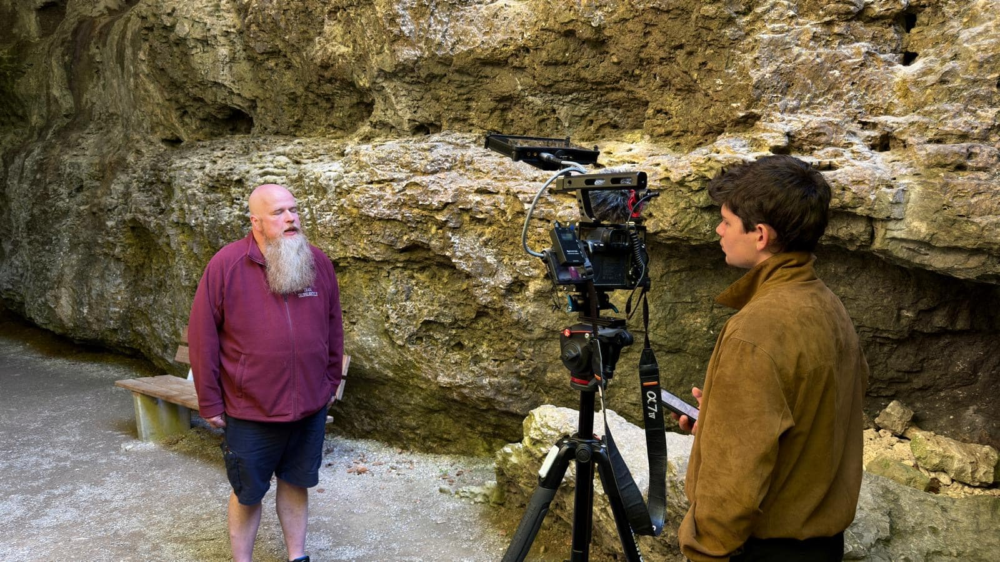
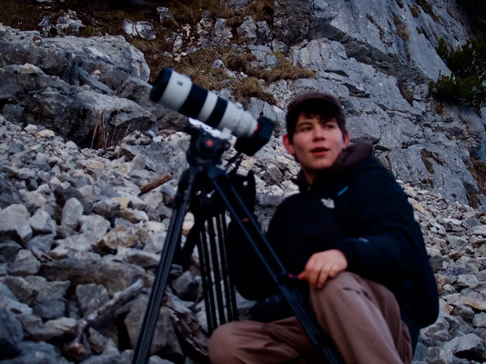

Behind the scenes. Stories. Process. Human moments.
Discover the moments beyond the final film
Inside the Journey
Behind the scenes where stories truly come alive. A glimpse behind the camera: the challenges, adventures and human moments that shape every film. Discover the journey behind our stories and how they come to life in the wild.

Placeholder video
Behind the scenes
Note: this is still the placeholder video from the template. Please replace with real behind-the-scenes material once available.